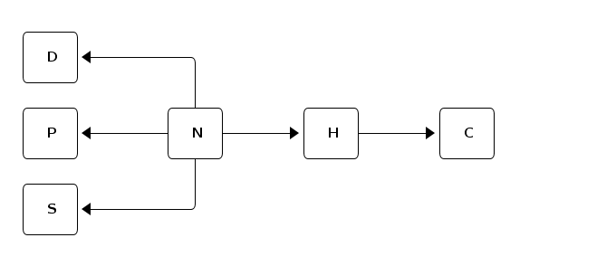

Table of Contents
1 Introduction
According to Albert Einstein only 2 % of us are able to solve the Zebra Puzzle. Well, with a little help of OWL, it is not so difficult.
This document is a walk-through of how to encode the puzzle in OWL and then "decode" the answer using a reasoner.
2 The Zebra Puzzle
The puzzle is made up of 15 statements, plus some additional clarifying facts at the end. This is how the puzzle goes:
- There are five houses.
- The Englishman lives in the red house.
- The Spaniard owns the dog.
- Coffee is drunk in the green house.
- The Ukrainian drinks tea.
- The green house is immediately to the right of the ivory house.
- The Old Gold smoker owns snails.
- Kools are smoked in the yellow house.
- Milk is drunk in the middle house.
- The Norwegian lives in the first house.
- The man who smokes Chesterfields lives in the house next to the man with the fox.
- Kools are smoked in a house next to the house where the horse is kept.
- The Lucky Strike smoker drinks orange juice.
- The Japanese smokes Parliaments.
- The Norwegian lives next to the blue house.
Now, who drinks water? Who owns the zebra? In the interest of clarity, it must be added that each of the five houses is painted a different color, and their inhabitants are of different national extractions, own different pets, drink different beverages and smoke different brands of American cigarettes. One other thing: in statement 6, right means your right.
3 The Ontology
The exercise is to encode the Zebra Puzzle in an OWL ontology, so that the answer (Now, who drinks water? Who owns the zebra?) is computed by the reasoner.
The perhaps most difficult to do in this exercise is to express all the implicit information in the puzzle, e.g., that there are five houses on a row—where some houses are next to each other and some are not, that there are exactly five persons and that each person has exactly one favorite drink, and that the five drinks mentioned are the only ones considered. Remember that OWL ontologies and reasoning with them must abide by the open world assumption (OWA) and the none unique name assumption (NUNA).
Note that there are more than one way to model this, and that this solution might not be the "optimal". This may is meant to show some of the capabilities of OWL in a clear and educational manner.
The high-level model of my ontology is that a person (nationality) (N in the figure) has exactly one drink (D), one pet (P), one smoke (cigarette brand) (S) and lives in one house (H). A house has exactly one color (C).

High-level model
The file starts with the regular namespace declarations and stating that it is an ontology.
1: @prefix : <http://folk.uio.no/martige/what/2012/04/22/zebra#> . 2: @prefix rdfs: <http://www.w3.org/2000/01/rdf-schema#> . 3: @prefix owl: <http://www.w3.org/2002/07/owl#> . 4: @prefix xsd: <http://www.w3.org/2001/XMLSchema#> . 5: @prefix rdf: <http://www.w3.org/1999/02/22-rdf-syntax-ns#> . 6: 7: <http://folk.uio.no/martige/what/2012/04/22/zebra> rdf:type owl:Ontology .
All classes are set as pairwise disjoint.
8: [ rdf:type owl:AllDisjointClasses ; 9: owl:members ( :Color :Drink :House :Person :Pet :Smoke ) ] .
Each class is defined as equivalent to the set of its members (this is called a closed class). This is done to ensure that they cannot have other members (remember the OWA).
10: :Color rdf:type owl:Class ; 11: owl:equivalentClass [ 12: rdf:type owl:Class ; 13: owl:oneOf ( :Blue :Yellow :Ivory :Green :Red ) ] . 14: :Drink rdf:type owl:Class ; 15: owl:equivalentClass [ 16: rdf:type owl:Class ; 17: owl:oneOf ( :OrangeJuice :Water :Tea :Milk :Coffee ) ] . 18: :Pet rdf:type owl:Class ; 19: owl:equivalentClass [ 20: rdf:type owl:Class ; 21: owl:oneOf ( :Horse :Zebra :Fox :Dog :Snails ) ] . 22: :Smoke rdf:type owl:Class ; 23: owl:equivalentClass [ 24: rdf:type owl:Class ; 25: owl:oneOf ( :Kools :Chesterfield :LuckyStrike :OldGold :Parliament ) ] . 26: :House rdf:type owl:Class ; 27: owl:equivalentClass [ 28: rdf:type owl:Class ; 29: owl:oneOf ( :House5 :House4 :House2 :House3 :House1 ) ] . 30: :Person rdf:type owl:Class ; 31: owl:equivalentClass [ 32: rdf:type owl:Class ; 33: owl:oneOf ( :Norwegian :Spaniard :Ukrainian :Japanese :Englishman ) ] .
The relationships between Person and Drink, Pet, Smoke and House, and between House and Color are defined by setting the correct domain and range. Additionally, all these ObjectProperties are defined as functional and inverse functional. This is to ensure that, e.g., a person drinks at most one drink and that a drink is drunk by at most one person.
34: :drinks rdf:type owl:FunctionalProperty , 35: owl:InverseFunctionalProperty , 36: owl:ObjectProperty ; 37: rdfs:range :Drink ; 38: rdfs:domain :Person . 39: 40: :hasColor rdf:type owl:FunctionalProperty , 41: owl:InverseFunctionalProperty , 42: owl:ObjectProperty ; 43: rdfs:range :Color ; 44: rdfs:domain :House . 45: 46: :hasPet rdf:type owl:FunctionalProperty , 47: owl:InverseFunctionalProperty , 48: owl:ObjectProperty ; 49: rdfs:domain :Person ; 50: rdfs:range :Pet . 51: 52: :livesIn rdf:type owl:FunctionalProperty , 53: owl:InverseFunctionalProperty , 54: owl:ObjectProperty ; 55: rdfs:range :House ; 56: rdfs:domain :Person . 57: 58: :smokes rdf:type owl:FunctionalProperty , 59: owl:InverseFunctionalProperty , 60: owl:ObjectProperty ; 61: rdfs:domain :Person ; 62: rdfs:range :Smoke .
So far we have stated that a person drinks at most one drink. To make sure that a person does not drink zero drinks, we state that the class Person is subclass of the class that has one drinks relationship—and repeat an equivalent approach to the other classes that a person is related to. Similarly, we do the same for houses; a house has a color.
63: :Person rdf:type owl:Class ; 64: rdfs:subClassOf 65: [ rdf:type owl:Class ; 66: owl:intersectionOf ( 67: [ rdf:type owl:Restriction ; 68: owl:onProperty :drinks ; 69: owl:someValuesFrom owl:Thing ] 70: [ rdf:type owl:Restriction ; 71: owl:onProperty :hasPet ; 72: owl:someValuesFrom owl:Thing ] 73: [ rdf:type owl:Restriction ; 74: owl:onProperty :livesIn ; 75: owl:someValuesFrom owl:Thing ] 76: [ rdf:type owl:Restriction ; 77: owl:onProperty :smokes ; 78: owl:someValuesFrom owl:Thing ] 79: ) 80: ] . 81: 82: :House rdf:type owl:Class ; 83: rdfs:subClassOf [ rdf:type owl:Restriction ; 84: owl:onProperty :hasColor ; 85: owl:someValuesFrom owl:Thing ] .
To say that there are five houses on a row is a statement with lots of implicit facts and can be broken down to the following statements, including some necessary vocabulary and a translation to OWL in mind:
- There are five houses.
- They are all different.
- The second house lies to the right of the first house, the third to the right of the second house, and so on, but no house lies to the right of the fifth house and no house is left of the first house.
- If a house A lies right of a house B, then B is left of A—and vice versa.
- If a house A is to the right or to the left of a house B, then A is also next to B.
- If a house A is next to a house B, then B is also next to the A.
- No house is next to more than two houses.
- No house is next to itself.
Now to OWL syntax. Each code block below is introduced with a reference to which of the statements above the block expresses.
Statement 6 is stated by declaring isNextTo as a symmetric property.
Statement 8 is stated by declaring isNextTo as an irreflexive property.
Statement 5: isRightTo and isLeftTo are subPropertiesOf isNextTo.
Statement 4: isRightTo (is the) inverseOf isLeftTo, by which it follows that isLeftTo is the inverseOf isRightTo.
86: :isNextTo rdf:type owl:IrreflexiveProperty , 87: owl:ObjectProperty , 88: owl:SymmetricProperty ; 89: rdfs:domain :House ; 90: rdfs:range :House . 91: 92: :isRightTo rdf:type owl:FunctionalProperty , 93: owl:InverseFunctionalProperty , 94: owl:ObjectProperty ; 95: owl:inverseOf :isLeftTo ; 96: rdfs:subPropertyOf :isNextTo . 97: 98: :isLeftTo rdf:type owl:ObjectProperty ; 99: rdfs:subPropertyOf :isNextTo .
Statement 7: adding a cardinality restriction of max 2 isNextTo relations to the House.
100: :House rdf:type owl:Class ; 101: rdfs:subClassOf 102: [ rdf:type owl:Restriction ; 103: owl:onProperty :isNextTo ; 104: owl:onClass :House ; 105: owl:maxQualifiedCardinality "2"^^xsd:nonNegativeInteger ] , 106: [ rdf:type owl:Restriction ; 107: owl:onProperty :hasColor ; 108: owl:someValuesFrom owl:Thing ] .
Statements 1 and 2:
109: [ rdf:type owl:AllDifferent ; 110: owl:distinctMembers ( :House2 :House1 :House4 :House3 :House5 ) ] .
Statement 3. To ensure that our five houses may not be placed in a circle, we state that the two houses on each end of the row, House1 and House5, are not next to each other. This is done with a NegativePropertyAssertion.
111: :House1 :isLeftTo :House2 . 112: :House2 :isLeftTo :House3 . 113: :House3 :isLeftTo :House4 . 114: :House4 :isLeftTo :House5 . 115: 116: [ rdf:type owl:NegativePropertyAssertion ; 117: owl:assertionProperty :isNextTo ; 118: owl:targetIndividual :House1 ; 119: owl:sourceIndividual :House5 ] .
Finally, we set all the members of each class as distinct individuals. Note that we only state the members of each class as different, e.g., we need not state that Coffee is different from Blue since they are declared as members of classes which are are disjoint.
120: [ rdf:type owl:AllDifferent ; 121: owl:distinctMembers ( :Green :Ivory :Red :Yellow :Blue ) ] . 122: 123: [ rdf:type owl:AllDifferent ; 124: owl:distinctMembers ( :Spaniard :Norwegian :Englishman :Ukrainian :Japanese ) ] . 125: 126: [ rdf:type owl:AllDifferent ; 127: owl:distinctMembers ( :Tea :OrangeJuice :Water :Coffee :Milk ) ] . 128: 129: [ rdf:type owl:AllDifferent ; 130: owl:distinctMembers ( :Dog :Zebra :Fox :Snails :Horse ) ] .
Next we state the fifteen statements listed in the puzzle text. Actually we only need fourteen, The first statement, "There are five houses", is left out since it is already expressed above. All statements are marked below. They are quite straight-forward, using blank nodes when a person or a house is not identified in the statement.
131: ### statement 2 132: :Englishman :livesIn [ :hasColor :Red ] . 133: 134: ### statement 3 135: :Spaniard :hasPet :Dog . 136: 137: ### statement 4 138: [] :drinks :Coffee ; 139: :livesIn [ :hasColor :Green ] . 140: 141: ### statement 5 142: :Ukrainian :drinks :Tea . 143: 144: ### statement 6 145: [] :hasColor :Green ; 146: :isRightTo [ :hasColor :Ivory ] . 147: 148: ### statement 7 149: [] :smokes :OldGold ; 150: :hasPet :Snails . 151: 152: ### statement 8 153: [] :smokes :Kools ; 154: :livesIn [ :hasColor :Yellow ] . 155: 156: ### statement 9 157: [] :drinks :Milk ; 158: :livesIn :House3 . 159: 160: ### statement 10 161: :Norwegian :livesIn :House1 . 162: 163: ### statement 11 164: [] :smokes :Chesterfield ; 165: :livesIn [ :isNextTo _:x11 ] . 166: [] :livesIn _:x11 ; 167: :hasPet :Fox . 168: 169: ### statement 12 170: [] :smokes :Kools; 171: :livesIn [ :isNextTo _:x12 ] . 172: [] :livesIn _:x12 ; 173: :hasPet :Horse . 174: 175: ### statement 13 176: [] :smokes :LuckyStrike ; 177: :drinks :OrangeJuice . 178: 179: ### statement 14 180: :Japanese :smokes :Parliament . 181: 182: ### statement 15 183: :Norwegian :livesIn [ :isNextTo [ :hasColor :Blue ] ] .